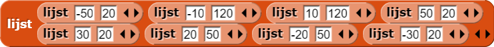
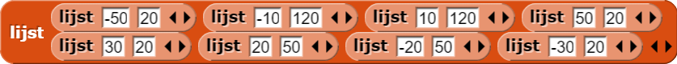
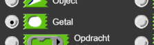

Abstracte datatypes
punt maken,
zodat je eigen H2L2-TekenVorm code aangenamer is om te lezen, debuggen en gebruiken:

De naam zegt het eigenlijk al, een data-type zegt wat voor type de data is (getal, tekst /
tekens, lijst, etc.). Elke programmeertaal heeft primitieve data-types,
dit zijn de data-types die al standaard ingebouwd zitten in de taal. Snap! heeft als standaard
data-types onder andere getallen, tekst (woorden en zinnen), lijsten, Booleans, en nog veel meer:

Een abstract data-type (of ADT) is een data-type dat nodig is voor je programma, maar niet ingebouwd zit in de programmeertaal. Je bouwt dit dan terwijl je programmeert.
In deze les bijvoorbeeld, maak je een puntdata-type met:
- voor het bouwen van de ADT.
-
 om
coördinaten te
selecteren van een punt.
om
coördinaten te
selecteren van een punt.
Het woord "abstract" wordt vaak gebruikt als iets moeilijker om te begrijpen is, maar in de computerwetenschappen, betekent het bijna het tegenovergestelde. ADT's zijn dingen die jij, de programmeur, gebruikt om jouw programma makkelijker te laten lezen, debuggen en gebruiken. Niet alleen makkelijker voor jezelf, maar ook makkelijker voor anderen.
 blok
en bedacht een manier om dit veel leesbaarder te maken."
blok
en bedacht een manier om dit veel leesbaarder te maken."
 zijn moeilijk te lezen. Zelfs nadat ik het had geschreven en gebruikte om de y coördinaat te
vinden, moest ik twee keer nadenken voordat ik het snapte."
zijn moeilijk te lezen. Zelfs nadat ik het had geschreven en gebruikte om de y coördinaat te
vinden, moest ik twee keer nadenken voordat ik het snapte."
punt ADT, gebruikt, hoef je verder niet na te
denken over hoe punten worden weergegeven als lijst.
 blok definiëren en dat gebruiken, in plaats van
blok definiëren en dat gebruiken, in plaats van item 2 van."
item 2 van, dus wat
is daar het nut van? Dat zal het programma niet korter maken."
x-coördinaat en y-coördinaat gebruiken in
plaats van item van als inputs voor het ga naar blok."
 en
en

 schrijven in plaats van .
Op die manier is het veel duidelijker dat het een lijst met punten is."
schrijven in plaats van .
Op die manier is het veel duidelijker dat het een lijst met punten is."

# niet in de invoernaam van punt.
Net zoals het ⋮ symbool bij een lijst als invoer, is #
geen onderdeel van de naam, maar een type-hint die je maakt wanneer je
getal selecteert als invoer-type:

Het invoertype verandert ook de vorm van het invoer-slot om aan te geven wat voor soort invoer verwacht wordt.
punt.
De - en
- Als je H2L2-TekenVormproject nog niet open is, open dat dan nu.
- Verbeter je
ga naar puntblok (van "H2L2-TekenVorm") door een selecteerder te gebruiken binnen hetga naar puntblok zoals Bo en Yasmine eerder beschreven. -
 Zet
dat script om in een algemeen
Zet
dat script om in een algemeen  blok dat een lijst van punten
aanneemt als invoer en die vorm tekent.
blok dat een lijst van punten
aanneemt als invoer en die vorm tekent.
- Maak een lijst van punten die een andere letter of vorm tekent. Maak deze keer gebruik van een
lijst van
puntbouwers in plaats van een lijst van lijsten. Check of jeteken vorm ()blok werkt met deze nieuwe lijst. - Als je andere letters hebt gemaakt, bouw dan een
teken bericht()blok dat een lijst van letters als invoer aanneemt enteken vorm()meerdere keren gebruikt om een bericht te tekenen.
Zie je hoe hier abstractie gebruikt wordt? Het bericht "Hi" weergeven als verbergt de
complexiteit van de lijsten met coördinaten die zijn gebruikt om vormen te tekenen.
verbergt de
complexiteit van de lijsten met coördinaten die zijn gebruikt om vormen te tekenen.
- Verander je project zodanig dat
teken berichtde letters naast elkaar tekent, in plaats van over elkaar: